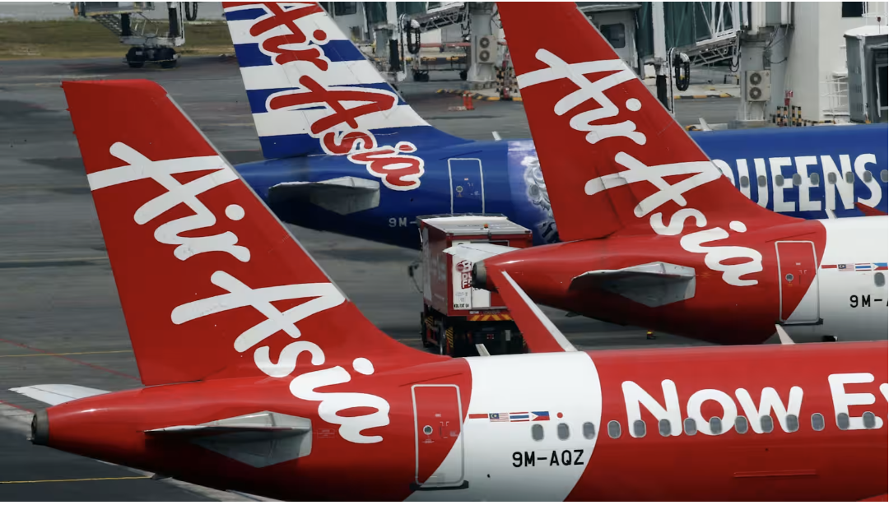
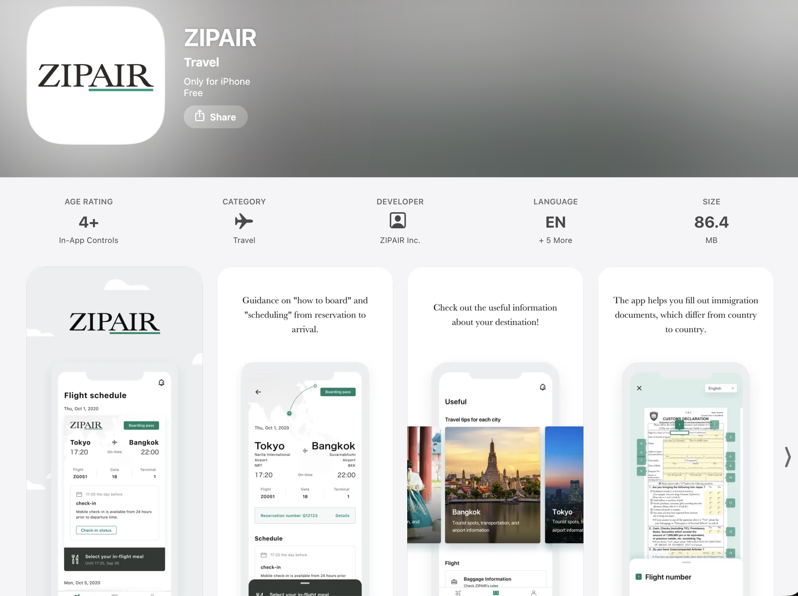

The next airline battle is happening on your smartphone.

For decades, airlines competed through routes, aircraft fleets, and ticket prices.
Low-cost carriers transformed aviation by making air travel more affordable and accessible.
But today, another competition is happening quietly — inside passengers’ smartphones.
Mobile apps have become a critical part of the airline experience. They connect customers with check-in, payments, loyalty programs, flight updates, and additional services.
Behind every update is a business decision:
Business agility is often difficult to measure.
Companies describe themselves as innovative and customer-focused, but these qualities are rarely visible.
Mobile applications provide a window into how companies respond to change.
An airline app is never truly finished. Each update reveals what a company chooses to improve.
To understand these patterns, I examined app release histories from four airlines operating in Asia:
The frequency of app updates provides one visible signal of digital agility.
Airlines that continuously improve their platforms show how actively they respond to changing customer expectations.
Speed alone does not tell the whole story.
The type of improvement also reveals a company's strategy.
Each app update was classified into four categories:

AirAsia’s digital strategy reflects the needs of Southeast Asia’s largest low-cost markets.
By improving customer experience through digital platforms, the airline can efficiently serve millions of passengers while reducing operational friction.
Scoot demonstrates a balanced approach across customer experience, features, and maintenance.
Its updates suggest a strategy focused on continuously improving multiple customer touchpoints.
As a newer airline brand, ZIPAIR represents a different model of agility.
Its digital development supports expansion while building scalable systems from the beginning.
Full-service carriers face different challenges.
For JAL, agility is not only about releasing new features quickly. Reliability, trust, and operational stability remain essential.
The airline industry is usually measured through aircraft, passengers, and routes.
But the next competitive advantage may come from something less visible:
Apps are not just digital products.
They are signals of how businesses respond to change.
In Asia’s fast-moving markets, digital agility may become as important as price and network size.
App update histories were collected from Apple App Store release notes.
Updates from four airlines were manually classified into four categories:
Tools:
Apple App Store version histories.
Airline mobile app release notes collected and classified by the author.